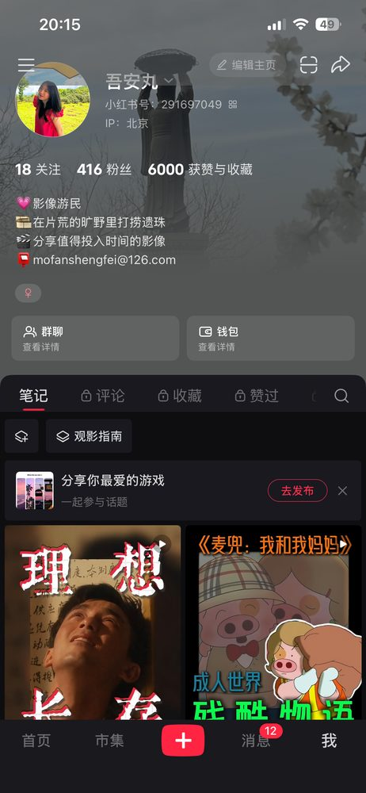

新媒体营销 · 影视营销 · 内容创作者
SCROLL
ACT I · 关于我
方法 · METHOD
新媒体矩阵搭建方法论:熟悉各个平台玩法,有从 0-1 搭建新媒体矩阵的实操经验,为多个品牌与个人 IP 搭建新媒体矩阵,沉淀出内容营销向业务转化实现的方法论。
协同 · TEAMWORK
管理与灵活协同经验:有团队管理经验,擅长多任务线管理;有甲方、乙方从业经验,拥有丰富业内资源。
态度 · ATTITUDE
热情且专业:责任心强,强执行且多创意,坚持用专业输出,并不断学习。
ACT II · 我的主页

ACT III · 过往文章
日常稿件与 2019 平遥电影节专题,点击卡片可查看全文。
文章整理中,敬请期待。